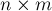
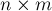
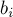
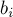
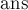
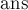

MAXimal
добавлено: 11 Jun 2008 11:11
редактировано: 2 May 2012 0:40
Содержание [скрыть]
Метод Гаусса решения системы линейных уравнений
Дана система  линейных алгебраических уравнений (СЛАУ) с
линейных алгебраических уравнений (СЛАУ) с  неизвестными. Требуется решить эту систему: определить, сколько решений она имеет (ни одного, одно или бесконечно много), а если она имеет хотя бы одно решение, то найти любое из них.
неизвестными. Требуется решить эту систему: определить, сколько решений она имеет (ни одного, одно или бесконечно много), а если она имеет хотя бы одно решение, то найти любое из них.
Формально задача ставится следующим образом: решить систему:
где коэффициенты и  известны, а переменные — искомые неизвестные.
известны, а переменные — искомые неизвестные.
Удобно матричное представление этой задачи:
где  — матрица , составленная из коэффициентов ,
— матрица , составленная из коэффициентов ,  и
и  — векторы-столбцы высоты .
— векторы-столбцы высоты .
Стоит отметить, что СЛАУ может быть не над полем действительных чисел, а над полем по модулю какого-либо числа  , т.е.:
, т.е.:
— алгоритм Гаусса работает и для таких систем тоже (но этот случай будет рассмотрен ниже в отдельном разделе).
Алгоритм Гаусса
Строго говоря, описываемый ниже метод правильно называть методом "Гаусса-Жордана" (Gauss-Jordan elimination), поскольку он является вариацией метода Гаусса, описанной геодезистом Вильгельмом Жорданом в 1887 г. (стоит отметить, что Вильгельм Жордан не является автором ни теоремы Жордана о кривых, ни жордановой алгебры — всё это три разных учёных-однофамильца; кроме того, по всей видимости, более правильной является транскрипция "Йордан", но написание "Жордан" уже закрепилось в русской литературе). Также интересно заметить, что одновременно с Жорданом (а по некоторым данным даже раньше него) этот алгоритм придумал Класен (B.-I. Clasen).
Базовая схема
Кратко говоря, алгоритм заключается в последовательном исключении переменных из каждого уравнения до тех пор, пока в каждом уравнении не останется только по одной переменной. Если  , то можно говорить, что алгоритм Гаусса-Жордана стремится привести матрицу системы к единичной матрице — ведь после того как матрица стала единичной, решение системы очевидно — решение единственно и задаётся получившимися коэффициентами .
, то можно говорить, что алгоритм Гаусса-Жордана стремится привести матрицу системы к единичной матрице — ведь после того как матрица стала единичной, решение системы очевидно — решение единственно и задаётся получившимися коэффициентами .
При этом алгоритм основывается на двух простых эквивалентных преобразованиях системы: во-первых, можно обменивать два уравнения, а во-вторых, любое уравнение можно заменить линейной комбинацией этой строки (с ненулевым коэффициентом) и других строк (с произвольными коэффициентами).
На первом шаге алгоритм Гаусса-Жордана делит первую строку на коэффициент . Затем алгоритм прибавляет первую строку к остальным строкам с такими коэффициентами, чтобы их коэффициенты в первом столбце обращались в нули — для этого, очевидно, при прибавлении первой строки к  -ой надо домножать её на . При каждой операции с матрицей (деление на число, прибавление к одной строке другой) соответствующие операции производятся и с вектором ; в некотором смысле, он ведёт себя, как если бы он был -ым столбцом матрицы .
-ой надо домножать её на . При каждой операции с матрицей (деление на число, прибавление к одной строке другой) соответствующие операции производятся и с вектором ; в некотором смысле, он ведёт себя, как если бы он был -ым столбцом матрицы .
В итоге, по окончании первого шага первый столбец матрицы станет единичным (т.е. будет содержать единицу в первой строке и нули в остальных).
Аналогично производится второй шаг алгоритма, только теперь рассматривается второй столбец и вторая строка: сначала вторая строка делится на , а затем отнимается от всех остальных строк с такими коэффициентами, чтобы обнулять второй столбец матрицы .
И так далее, пока мы не обработаем все строки или все столбцы матрицы . Если , то по построению алгоритма очевидно, что матрица получится единичной, что нам и требовалось.
Поиск опорного элемента (pivoting)
Разумеется, описанная выше схема неполна. Она работает только в том случае, если на каждом -ом шаге элемент отличен от нуля — иначе мы просто не сможем добиться обнуления остальных коэффициентов в текущем столбце путём прибавления к ним -ой строки.
Чтобы сделать алгоритм работающим в таких случаях, как раз и существует процесс выбора опорного элемента (на английском языке это называется одним словом "pivoting"). Он заключается в том, что производится перестановка строк и/или столбцов матрицы, чтобы в нужном элементе оказалось ненулевое число.
Заметим, что перестановка строк значительно проще реализуется на компьютере, чем перестановка столбцов: ведь при обмене местами двух каких-то столбцов надо запомнить, что эти две переменных обменялись местами, чтобы затем, при восстановлении ответа, правильно восстановить, какой ответ к какой переменной относится. При перестановке строк никаких таких дополнительных действий производить не надо.
К счастью, для корректности метода достаточно одних только обменов строк (т.н. "partial pivoting", в отличие от "full pivoting", когда обмениваются и строки, и столбцы). Но какую же именно строку следует выбирать для обмена? И правда ли, что поиск опорного элемента надо делать только тогда, когда текущий элемент нулевой?
Общего ответа на этот вопрос не существует. Есть разнообразные эвристики, однако самой эффективной из них (по соотношению простоты и отдачи) является такая эвристика: в качестве опорного элемента следует брать наибольший по модулю элемент, причём производить поиск опорного элемента и обмен с ним надо всегда, а не только когда это необходимо (т.е. не только тогда, когда  ).
).
Иными словами, перед выполнением -ой фазы алгоритма Гаусса-Жордана с эвристикой partial pivoting необходимо найти в -ом столбце среди элементов с индексами от до максимальный по модулю, и обменять строку с этим элементом с -ой строкой.
Во-первых, эта эвристика позволит решить СЛАУ, даже если по ходу решения будет случаться так, что элемент . Во-вторых, что весьма немаловажно, эта эвристика улучшает численную устойчивость алгоритма Гаусса-Жордана.
Без этой эвристики, даже если система такова, что на каждой -ой фазе — алгоритм Гаусса-Жордана отработает, но в итоге накапливающаяся погрешность может оказаться настолько огромной, что даже для матриц размера около  погрешность будет превосходить сам ответ.
погрешность будет превосходить сам ответ.
Вырожденные случаи
Итак, если останавливаться на алгоритме Гаусса-Жордана с partial pivoting, то, утверждается, если и система невырождена (т.е. имеет ненулевой определитель, что означает, что она имеет единственное решение), то описанный выше алгоритм полностью отработает и придёт к единичной матрице (доказательство этого, т.е. того, что ненулевой опорный элемент всегда будет находиться, здесь не приводится).
Рассмотрим теперь общий случай — когда и не обязательно равны. Предположим, что опорный элемент на -ом шаге не нашёлся. Это означает, что в -ом столбце все строки, начиная с текущей, содержат нули. Утверждается, что в этом случае эта -ая переменная не может быть определена, и является независимой переменной (может принимать произвольное значение). Чтобы алгоритм Гаусса-Жордана продолжил свою работу для всех последующих переменных, в такой ситуации надо просто пропустить текущий -ый столбец, не увеличивая при этом номер текущей строки (можно сказать, что мы виртуально удаляем -ый столбец матрицы).
Итак, некоторые переменные в процессе работы алгоритма могут оказываться независимыми. Понятно, что когда количество переменных больше количества уравнений, то как минимум переменных обнаружатся независимыми.
В целом, если обнаружилась хотя бы одна независимая переменная, то она может принимать произвольное значение, в то время как остальные (зависимые) переменные будут выражаться через неё. Это означает, что, когда мы работаем в поле действительных чисел, система потенциально имеет бесконечно много решений (если мы рассматриваем СЛАУ по модулю, то число решений будет равно этому модулю в степени количества независимых переменных). Впрочем, следует быть аккуратным: надо помнить о том, что даже если были обнаружены независимые переменные, тем не менее СЛАУ может не иметь решений вовсе. Это происходит, когда в оставшихся необработанными уравнениях (тех, до которых алгоритм Гаусса-Жордана не дошёл, т.е. это уравнения, в которых остались только независимые переменные) есть хотя бы один ненулевой свободный член.
Впрочем, проще это проверить явной подстановкой найденного решения: всем независимыми переменным присвоить нулевые значения, зависимым переменным присвоить найденные значения, и подставить это решение в текущую СЛАУ.
Реализация
Приведём здесь реализацию алгоритма Гаусса-Жордана с эвристикой partial pivoting (выбором опорного элемента как максимума по столбцу).
На вход функции передаётся сама матрица системы  . Последний столбец матрицы — это в наших старых обозначениях столбец свободных коэффициентов (так сделано для удобства программирования — т.к. в самом алгоритме все операции со свободными коэффициентами повторяют операции с матрицей ).
. Последний столбец матрицы — это в наших старых обозначениях столбец свободных коэффициентов (так сделано для удобства программирования — т.к. в самом алгоритме все операции со свободными коэффициентами повторяют операции с матрицей ).
Функция возвращает число решений системы ( ,
,  или
или  ) (бесконечность обозначена в коде специальной константой
) (бесконечность обозначена в коде специальной константой  , которой можно задать любое большое значение). Если хотя бы одно решение существует, то оно возвращается в векторе .
, которой можно задать любое большое значение). Если хотя бы одно решение существует, то оно возвращается в векторе .
int gauss (vector < vector<double> > a, vector<double> & ans) { int n = (int) a.size(); int m = (int) a[0].size() - 1; vector<int> where (m, -1); for (int col=0, row=0; col<m && row<n; ++col) { int sel = row; for (int i=row; i<n; ++i) if (abs (a[i][col]) > abs (a[sel][col])) sel = i; if (abs (a[sel][col]) < EPS) continue; for (int i=col; i<=m; ++i) swap (a[sel][i], a[row][i]); where[col] = row; for (int i=0; i<n; ++i) if (i != row) { double c = a[i][col] / a[row][col]; for (int j=col; j<=m; ++j) a[i][j] -= a[row][j] * c; } ++row; } ans.assign (m, 0); for (int i=0; i<m; ++i) if (where[i] != -1) ans[i] = a[where[i]][m] / a[where[i]][i]; for (int i=0; i<n; ++i) { double sum = 0; for (int j=0; j<m; ++j) sum += ans[j] * a[i][j]; if (abs (sum - a[i][m]) > EPS) return 0; } for (int i=0; i<m; ++i) if (where[i] == -1) return INF; return 1; }
В функции поддерживаются два указателя — на текущий столбец и текущую строку .
Также заводится вектор  , в котором для каждой переменной записано, в какой строке должна она получиться (иными словами, для каждого столбца записан номер строки, в которой этот столбец отличен от нуля). Этот вектор нужен, поскольку некоторые переменные могли не "определиться" в ходе решения (т.е. это независимые переменные, которым можно присвоить произвольное значение — например, в приведённой реализации это нули).
, в котором для каждой переменной записано, в какой строке должна она получиться (иными словами, для каждого столбца записан номер строки, в которой этот столбец отличен от нуля). Этот вектор нужен, поскольку некоторые переменные могли не "определиться" в ходе решения (т.е. это независимые переменные, которым можно присвоить произвольное значение — например, в приведённой реализации это нули).
Реализация использует технику partial pivoting, производя поиск строки с максимальным по модулю элементом, и переставляя затем эту строку в позицию (хотя явную перестановку строк можно заменить обменом двух индексов в некотором массиве, на практике это не даст реального выигрыша, т.к. на обмены тратится  операций).
операций).
В реализации в целях простоты текущая строка не делится на опорный элемент — так что в итоге по окончании работы алгоритма матрица становится не единичной, а диагональной (впрочем, по-видимому, деление строки на ведущий элемент позволяет несколько уменьшить возникающие погрешности).
После нахождения решения оно подставляется обратно в матрицу — чтобы проверить, имеет ли система хотя бы одно решение или нет. Если проверка найденного решения прошла успешно, то функция возвращает или — в зависимости от того, есть ли хотя бы одна независимая переменная или нет.
Асимптотика
Оценим асимптотику полученного алгоритма. Алгоритм состоит из фаз, на каждой из которых происходит:
- поиск и перестановка опорного элемента — за время
 при использовании эвристики "partial pivoting" (поиск максимума в столбце)
при использовании эвристики "partial pivoting" (поиск максимума в столбце) - если опорный элемент в текущем столбце был найден — то прибавление текущего уравнения ко всем остальным уравнениям — за время

Очевидно, первый пункт имеет меньшую асимптотику, чем второй. Заметим также, что второй пункт выполняется не более  раз — столько, сколько может быть зависимых переменных в СЛАУ.
раз — столько, сколько может быть зависимых переменных в СЛАУ.
Таким образом, итоговая асимптотика алгоритма принимает вид .
При эта оценка превращается в  .
.
Заметим, что когда СЛАУ рассматривается не в поле действительных чисел, а в поле по модулю два, то систему можно решать гораздо быстрее — об этом см. ниже в разделе "Решение СЛАУ по модулю".
Более точная оценка числа действий
Для простоты выкладок будем считать, что .
Как мы уже знаем, время работы всего алгоритма фактически определяется временем, затрачиваемым на исключение текущего уравнения из остальных.
Это может происходить на каждом из шагов, при этом текущее уравнение прибавляется ко всем  остальным. При прибавлении работа идёт только со столбцами, начиная с текущего. Таким образом, в сумме получается операций.
остальным. При прибавлении работа идёт только со столбцами, начиная с текущего. Таким образом, в сумме получается операций.
Дополнения
Ускорение алгоритма: разделение его на прямой и обратный ход
Добиться двукратного ускорения алгоритма можно, рассмотрев другую его версию, более классическую, когда алгоритм разбивается на фазы прямого и обратного хода.
В целом, в отличие от описанного выше алгоритма, можно приводить матрицу не к диагональному виду, а к треугольному виду — когда все элементы строго ниже главной диагонали равны нулю.
Система с треугольной матрицей решается тривиально — сначала из последнего уравнения сразу находится значение последней переменной, затем найденное значение подставляется в предпоследнее уравнение и находится значение предпоследней переменной, и так далее. Этот процесс и называется обратным ходом алгоритма Гаусса.
Прямой ход алгоритма Гаусса — это алгоритм, аналогичный описанному выше алгоритму Гаусса-Жордана, за одним исключением: текущая переменная исключается не из всех уравнений, а только из уравнений после текущего. В результате этого действительно получается не диагональная, а треугольная матрица.
Разница в том, что прямой ход работает быстрее алгоритма Гаусса-Жордана — поскольку в среднем он делает в два раза меньше прибавлений одного уравнения к другому. Обратный ход работает за , что в любом случае асимптотически быстрее прямого хода.
Таким образом, если , то данный алгоритм будет делать уже операций — что в два раза меньше алгоритма Гаусса-Жордана.
Решение СЛАУ по модулю
Для решения СЛАУ по модулю можно применять описанный выше алгоритм, он сохраняет свою корректность.
Разумеется, теперь становится ненужным использовать какие-то хитрые техники выбора опорного элемента — достаточно найти любой ненулевой элемент в текущем столбце.
Если модуль простой, то никаких сложностей вообще не возникает — происходящие по ходу работы алгоритма Гаусса деления не создают особых проблем.
Особенно замечателен модуль, равный двум: для него все операции с матрицей можно производить очень эффективно. Например, отнимание одной строки от другой по модулю два — это на самом деле их симметрическая разность ("xor"). Таким образом, весь алгоритм можно значительно ускорить, сжав всю матрицу в битовые маски и оперируя только ими. Приведём здесь новую реализацию основной части алгоритма Гаусса-Жордана, используя стандартный контейнер C++ "bitset":
int gauss (vector < bitset<N> > a, int n, int m, bitset<N> & ans) { vector<int> where (m, -1); for (int col=0, row=0; col<m && row<n; ++col) { for (int i=row; i<n; ++i) if (a[i][col]) { swap (a[i], a[row]); break; } if (! a[row][col]) continue; where[col] = row; for (int i=0; i<n; ++i) if (i != row && a[i][col]) a[i] ^= a[row]; ++row; }
Как можно заметить, реализация стала даже немного короче, при том, что она значительно быстрее старой реализации — а именно, быстрее в  раза за счёт битового сжатия. Также следует отметить, что решение систем по модулю два на практике работает очень быстро, поскольку случаи, когда от одной строки надо отнимать другую, происходят достаточно редко (на разреженных матрицах этот алгоритм может работать за время скорее порядка квадрата от размера, чем куба).
раза за счёт битового сжатия. Также следует отметить, что решение систем по модулю два на практике работает очень быстро, поскольку случаи, когда от одной строки надо отнимать другую, происходят достаточно редко (на разреженных матрицах этот алгоритм может работать за время скорее порядка квадрата от размера, чем куба).
Если модуль произвольный (не обязательно простой), то всё становится несколько сложнее. Понятно, что пользуясь Китайской теоремой об остатках, мы сводим задачу с произвольным модулем только к модулям вида "степень простого". [ дальнейший текст был скрыт, т.к. это непроверенная информация — возможно, неправильный способ решения ]
Наконец, рассмотрим вопрос числа решений СЛАУ по модулю. Ответ на него достаточно прост: число решений равно , где — модуль,  — число независимых переменных.
— число независимых переменных.
Немного о различных способах выбора опорного элемента
Как уже говорилось выше, однозначного ответа на этот вопрос нет.
Эвристика "partial pivoting", которая заключалась в поиске максимального элемента в текущем столбце, работает на практике весьма неплохо. Также оказывается, что она даёт практически тот же результат, что и "full pivoting" — когда опорный элемент ищется среди элементов целой подматрицы — начиная с текущей строки и с текущего столбца.
Но интересно отметить, что обе эти эвристики с поиском максимального элемента, фактически, очень зависят от того, насколько были промасштабированы исходные уравнения. Например, если одно из уравнений системы умножить на миллион, то это уравнение почти наверняка будет выбрано в качестве ведущего на первом же шаге. Это кажется достаточно странным, поэтому логичен переход к немного более сложной эвристике — так называемому "implicit pivoting".
Эвристика implicit pivoting заключается в том, что элементы различных строк сравниваются так, как если бы обе строки были пронормированы таким образом, что максимальный по модулю элемент в них был бы равен единице. Для реализации этой техники надо просто поддерживать текущий максимум в каждой строке (либо поддерживать каждую строку так, чтобы максимум в ней был равен единице по модулю, но это может привести к увеличению накапливаемой погрешности).
Улучшение найденного ответа
Поскольку, несмотря на различные эвристики, алгоритм Гаусса-Жордана всё равно может приводить к большим погрешностям на специальных матрицах даже размеров порядка -  .
.
В связи с этим, полученный алгоритмом Гаусса-Жордана ответ можно улучшить, применив к нему какой-либо простой численный метод — например, метод простой итерации.
Таким образом, решение превращается в двухшаговое: сначала выполняется алгоритм Гаусса-Жордана, затем — какой-либо численный метод, принимающий в качестве начальных данных решение, полученное на первом шаге.
Такой приём позволяет несколько расширить множество задач, решаемых алгоритмом Гаусса-Жордана с приемлемой погрешностью.
Литература
- William H. Press, Saul A. Teukolsky, William T. Vetterling, Brian P. Flannery. Numerical Recipes: The Art of Scientific Computing [2007]
- Anthony Ralston, Philip Rabinowitz. A first course in numerical analysis [2001]